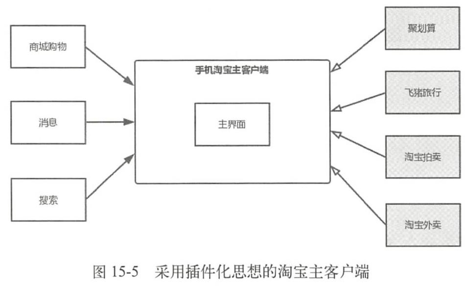

1. 动态加载技术
在Android传统开发中，一旦应用的代码被打包成APK并被上传到各个渠道市场，就不能修改应用的源码了，只能通过服务器来控制应用中预留的分支代码。但是很多时候无法提前预知需求和突然发生的情况，也就不能提前在应用代码中预留分支代码，这时就需要采用动态加载技术。在应用程序运行时，动态加载一些程序中原本不存在的可执行文件并运行这些文件里的代码逻辑。可执行文件总的来说分为两种，一种是动态链接库so，另一种是dex相关文件（dex以及包含dex的jar/apk文件）。
随着应用开发技术和业务的逐步发展，动态加载技术派生出两个技术，分别是热修复技术和插件化技术，其中热修复技术主要用来修复Bug，插件化技术则主要用于解决应用越来越庞大以及功能模块的解耦，围绕着两个技术出现了很多的热修复框架和插件化框架。
需要注意的是，动态加载技术本身并没有被官方认可，并且是一个非常规的技术，在国外这门技术关注度并不高，它 的产生更多的是国内的业务需求和产品的驱动。
2. 插件化的产生
2.1. 插件化定义
采用插件化思想来对淘宝主客户端框架进行改造：

插件化的客户端由宿主和插件两个部分组成，宿主就是指先被安装到手机中的APK，就是平常加载的普通APK。插件一般是指经过处理的APK、So和dex等文件，插件可以被宿主进行加载，有的插件也可以作为APK独立运行。
这里就可以引出插件化的定义：将一个应用按照插件的方式进行改造的过程就叫作插件化。
3. Activity插件化
四大组件的插件化是插件化技术的核心知识点，而Activity插件化更是重中之重，Activity插件化主要有3种实现方式，分别是反射实现、接口实现和Hook技术实现。反射实现会对性能有所影响，主流的插件化框架没有采用此方式，关于接口实现可以阅读dynamic-load-apk的源码，这里不做介绍，目前Hook技术实现是主流，因此本章主要介绍Hook技术实现。
Hook技术实现主要有两种解决方案，一种是通过HookIActivityManager来实现，另一种是HookInstrumentation实现。
3.1. Activity的启动过程回顾
根Activity的启动：首先Launcher进程向AMS请求创建根Activity，AMS会判断根Activity所需的应用程序进程是否存在并启动，如果不存在就会请求Zygote进程创建应用程序进程。应用程序进程启动后，AMS会请求应用程序进程创建并启动根Activity。
3.2. Hook IActivityManager方案实现
AMS存在于SystemServer进程中，无法直接修改，只能在应用程序进程中修改。可以采用预先占坑然后再替换的方式来解决没有在AndroidManifest.xml中显式声明的问题。
3.2.1. 注册Activity进行占坑
为了更好地讲解启动插件Activity的原理，这里省略了插件Activity的加载逻辑，直接 创建一个TargetActivity来代表已经加载进来的插件Activity，接着我们再创建一个 SubActivity*S。ÆAndroidManifest。xmlÈ}SubActivity，tuTT： AndroidManifest。xml <?xmlversion="1。0"encoding="utf-8"?>
<application
Page371
第15章插件化原理
privatestatic
finalSingleton
Page372 Android进阶解密 publicfinalTget（）{ synchronized（this）{ if（mInstance null）{ mInstance=create（）; } returnmInstance; 由于Hook需要多次对字段进行反射操作，先写一个字段工具类FieldUtil： FieldUtil。java publicclassFieldUtil{ publicstaticObjectgetField（Classclazz，Objecttarget，Stringname）throws Exception{ Fieldfield=clazz。getDeclaredField（name）; field。setAccessible（true）; returnfield。get（target）; } publicstaticFieldgetField（Classclazz，Stringname）throwsException{ Fieldfield=clazz。getDeclaredField（name）; field。setAccessible（true）; returnfield; } publicstaticvoidsetField（Classclazz，Objecttarget，Stringname，Objectvalue） throwsException{ Fieldfield=clazz。getDeclaredField（name）; field。setAccessible（true）; field。set（target，value）; } 其中setField方法不会马上用到，接着定义替换IActivityManager的代理类 IActivityManagerProxy，uFi： publicclassIActivityManagerProxyimplementsInvocationHandler{ privateObjectmActivityManager; privatestaticfinalStringTAG= "IActivityManagerProxy"; publicIActivityManagerProxy（ObjectactivityManager） this。mActivityManager activityManager; %3D } @Override publicObjectinvoke（Objecto，Methodmethod，Object[]args）throwsThrowable{ if（"startActivity"。equals（method。getName（）））{//1 Intentintent=null; 356
Page373
第15章插件化原理
intindex=0;
for（inti=0;i
Page374
Android进阶解密
FieldmInstanceField=FieldUtil。getField（singletonClazz，"mInstance"）;//2
//iActivityManager
ObjectiActivityManager=mInstanceField。get（defaultSingleton）;//3
Class<?>iActivityManagerClazz=Class。forName（"android。app。IActivityManager"）;
Objectproxy
Proxy。newProxyInstance（Thread。currentThread（）。getContext
%3D
ClassLoader（），newClass<?>[]{iActivityManagerClazz}，new
IactivityManagerProxy（iActivityManager））;
mInstanceField。set（defaultSingleton，proxy）;
}
首先在注释1处对系统版本进行区分，最终获取的是Singleton
Page375 仅供非商业用途或交流学习使用 第15章插件化原理 @Override publicvoidonClick（Viewview）{ Intentintent=newIntent（MainActivity。this，TargetActivity。class）; startActivity（intent）; 一 }）; 一 } 点击Button时，启动的并不是TargetActivity而是SubActivity，同时Log中打印了“hook 成功”，说明我们已经成功用SubActivity通过了AMS的校验。 15。4。2。3还原插件Activity 前面用占坑Activity通过了AMS的校验，但是我们要启动的是插件TargetActivity，还 需要用插件TargetActivity来替换占坑的SubActivity，这一替换的时机就在图15-7所示的 步骤2之后。在4。1。3节中讲到了ActivityThread启动Activity的过程，如图15-8所示。 ApplicationThread ActivityThread H Instrumentation Activity -schedulelaunchActivity -sendMessage -handleMessage- KhandlelaunchActivity- performlaunchActivity callActivityOnCreate- -performCreate- onCreate 图15-8ActivityThread启动Activity的过程 ActivityThread会通过H类将代码的逻辑切换到主线程中，H类是ActivityThread的内 部类并继承自Handler，如下所示： 359
Page376 仅供非商业用途或交流学习使用 Android进阶解密 frameworks/base/lcore/java/android/app/ActivityThread。java privateclassHextendsHandler{ publicstaticfinalintLAUNCHACTIVITY=100; publicstaticfinalintPAUSEACTIVITY=101; publicvoidhandleMessage（Messagemsg）{ if（DEBUG_MESSAGES）Slog。v（TAG，">>>handling： +codeToString（msg。 what））; switch（msg。what）{ caseLAUNCHACTIVITY：{ Trace。traceBegin（Trace。TRACE_TAG_ACTIVITY_MANAGER，"activityStart"）; finalActivityClientRecordr= （ActivityClientRecord）msg。obj; r。packageInfo=getPackageInfoNoCheck（ r。activityInfo。applicationInfo，r。compatInfo）; handleLaunchActivity（r，null，"LAUNCH_ACTIVITY"）; Trace。traceEnd（Trace。TRACETAGACTIVITYMANAGER）; }break; } H类中重写的handleMessage方法会对LAUNCH_ACTIVITY类型的消息进行处理，最 终会调用Activity的onCreate方法。那么在哪进行替换呢?接着来看Handler的 dispatchMessage frameworks/base/core/javalandroid/os/Handler。java publicvoiddispatchMessage（Messagemsg）{ if（msg。callback!=null）{ handleCallback（msg）; }else{ if（mCallback!=null）{ if（mCallback。handleMessage（msg））{ return; } handleMessage（msg）; } } Handler#jdispatchMessageHFL，AAHandlerjCallback*I mCallback不为null，就会执行mCallback的handleMessage方法。因此，mCallback可以作 360
Page377 仅供非商业用途或交流学习使用 第15章插件化原理 为Hook点，我们可以用自定义的Callback来替换mCallback，自定义的Callback如下所示： HCallback。java publicclassHCallbackimplementsHandler。Callback{ publicstaticfinalintLAUNCHACTIVITY=100; HandlermHandler; publicHCallback（Handlerhandler） mHandler=handler; } @Override publicbooleanhandleMessage（Messagemsg）{ if（msg。what LAUNCHACTIVITY）{ Objectr=msg。obj; try{ //得到消息中的Intent（启动SubActivity的Intent） Intentintent= （Intent）FieldUtil。getField（r。getClass（），r，"intent"）; //tEIntent（ÀTargetActivity#Intent） Intenttarget=intent。getParcelableExtra（HookHelper。TARGETINTENT）; //subActivityIntent**TargetActivity#Intent intent。setComponent（target。getComponent（））; }catch（Exceptione）{ e。printStackTrace（）; } mHandler。handleMessage（msg）; returntrue; } } HCallback实现了Handler。Callback，并重写了handleMessage方法，当收到消息的类型 为LAUNCH_ACTIVITY时，将启动SubActivity的Intent替换为启动TargetActivity的Intent。 接着我们在HookHelper中定义一个hookHandler方法，如下所示： HookHelper。java publicstaticvoidhookHandler（）throwsException{ Class。forName（"android。app。ActivityThread"）; ObjectcurrentActivityThread=FieldUtil。getField（activityThreadClass，null， Class<?>activityThreadClass %3D "sCurrentActivityThread"）;//1 FieldmHField=FieldUtil。getField（activityThread，"mH"）;//2 （Handler）mHField。get（currentActivityThread）;//3 FieldUtil。setField（Handler。class，mH，"mCallback"，newHCallback（mH））; HandlermH= } 361
Page378 仅供非商业用途或交流学习使用 Android进阶解密 ActivityThread类中有一个静态变量sCurrentActivityThread，用于表示当前的 ActivityThreadt，AEEE#1L*ActivityThread#ÈXJsCurrentActivityThread 对象。注释2处获取ActivityThread类的mH字段，接着在注释3处获取当前ActivityThread
4. mHt，aaahcallback**mHHmCallback，EMyApplicationJ
attachBaseContext方法中调用HookHelper的hookHandler方法，运行程序，当我们单击“启 动插件”按钮时，发现启动的是插件TargetActivity。 15。4。2。4插件Activity的生命周期 插件TargetActivity确实启动了，但是它有生命周期吗?这里从源码角度来进行分析， Activity的finish方法可以触发Activity的生命周期变化，和Activity的启动过程类似，finish 方法如下所示： frameworks/base/core/javalandroid/app/Activity。java publicvoidfinish（）{ finish（DONTFINISHTASKWITHACTIVITY）; } privatevoidfinish（intfinishTask）{ if（mParent==null）{ intresultCode; IntentresultData; synchronized（this）{ resultCode=mResultCode; resultData=mResultData; if（false）Log。v（TAG，"Finishingself：token="+mToken）; try{ if（resultData!=null）{ resultData。prepareToLeaveProcess（this）; if（ActivityManager。getService（） 。finishActivity（mToken，resultCode，resultData，finishTask）） {//1 mFinished=true; } }catch（RemoteExceptione）{ //Empty }else{ mParent。finishFromChild（this）; } } 362
Page379 仅供非商业用途或交流学习使用 第15章插件化原理 finish方法的调用链和Activity的启动过程是类似的，在注释1处调用AMS的 finishActivity，EREAMS1itApplicationThreadiActivityThread，ActivityThread 向H类发送DESTROY_ACTIVITY类型的消息，H类接收到这个消息会执行 handleDestroyActivityk，handleDestroyActivityXperformDestroyActivity 法，如下所示： frameworks/base/core/javalandroid/app/ActivityThread。java privateActivityClientRecordperformDestroyActivity（IBinder token， boolean finishing，intconfigChanges，booleangetNonConfigInstance）{ ActivityClientRecordr =mActivities。get（token）;//1 try{ r。activity。mCalled =false; mInstrumentation。callActivityOnDestroy（r。activity）;//2 }catch（SuperNotCalledExceptione）{ } } mActivities。remove（token）; StrictMode。decrementExpectedActivityCount（activityClass）; returnr; EÈ1LtIBindertoken*ActivityClientRecord，ActivityClientRecord HTaA+6Activity，EE2LInstrumentationjcallActivityOnDestroy 方法来调用Activity的OnDestroy方法，并传入了r。activity。前面的例子我们用SubActivity 替换了TargetActivity通过了AMS的校验，这样AMS只知道SubActivity的存在，那么AMS 是如何能控制TargetActivity生命周期的回调的呢?我们接着往下看，启动Activity时会调 HActivityThreadfjperformLaunchActivity，knF： frameworks/base/core/javalandroid/app/ActivityThread。java privateActivityperformLaunchActivity（ActivityClientRecordr，IntentcustomIntent）{ java。lang。ClassLoadercl= appContext。getClassLoader（）; activity mInstrumentation。newActivity（ %3D cl，component。getClassName（），r。intent）;//1 activity。attach（appContext，this，getInstrumentation（），r。token，r。ident， app，r。intent，r。activityInfo，title，r。parent，r。embeddedID， r。lastNonConfigurationInstances，config，r。referrer， r。voiceInteractor，window，r。configCallback）; 363
Page380
仅供非商业用途或交流学习使用
Android进阶解密
mActivities。put（r。token，r）;//2
returnactivity;
}
在注释1处根据Activity的类名用ClassLoader加载Acitivty，接着调用Activity的atach
方法，将rtoken赋值给Activity的成员变量mToken。在注释2处将ActivityClientRecord根
Er。token（RFEmActivities（mActivities*Y%ArrayMap
Page381 仅供非商业用途或交流学习使用 第15章插件化原理 Activity Instrumentation IActivityManager AMS startActivity startActivityForResult -execStartActivity- -startActivity- startActivity- 图15-9Acitivty的startActivity方法调用时序图 EstartActivityForResultATInstrumentationJexecStartActivityifi Activity的生命周期。 图15-8中会调用ActivityThread的performLaunchActivity方法，如下所示： frameworks/base/core/javalandroid/app/ActivityThread。java privateActivityperformLaunchActivity（ActivityClientRecordr，IntentcustomIntent）{ //创建要启动Activity的上下文环境 ContextImplappContext=createBaseContextForActivity（r）; Activityactivity =null; try{ java。lang。ClassLoadercl= appContext。getClassLoader（）; 1/用类加载器來创建Activity的实例 activity=mInstrumentation。newActivity（ cl，component。getClassName（），r。intent）;//1 }catch（Exceptione）{ returnactivity; } 365
Page382
Android进阶解密
在注释1处调用了mInstrumentation的newActivity方法，其内部会用类加载器来创建
Activity的实例。看到这里我们可以得到方案，就是在Instrumentation的execStartActivity
方法中用占坑SubActivity来通过AMS的验证，在Instrumentation的newActivity方法中还
原TargetActivity，这两部操作都和Instrumentation有关，因此我们可以用自定义的
Instrumentation**mInstrumentation，A0ÍÈL-↑Instrumentation，E
execStartActivityaTargetActivitySubActivity，kuTHi：
InstrumentationProxy。java
publicclassInstrumentationProxyextendsInstrumentation{
privateInstrumentationmInstrumentation;
privatePackageManagermPackageManager;
publicInstrumentationProxy（Instrumentationinstrumentation，PackageManager
packageManager）{
mInstrumentation
instrumentation;
mPackageManager
packageManager;
%3D
}
publicActivityResultexecStartActivity（
Contextwho，IBindercontextThread，IBindertoken，Activitytarget，
Intentintent，intrequestCode，Bundleoptions）{
List
5. 0）{
intent。setClassName（who， "com。example。liuwangshu。pluginactivity。StubActivity"）;//2 } try{ MethodexecMethod= Instrumentation。class。getDeclaredMethod（"execStart Activity"，Context。class，IBinder。class，IBinder。class，Activity。class， Intent。class，int。class，Bundle。class）; return（ActivityResult）execMethod。invoke（mInstrumentation，who， contextThread，token，target，intent，requestCode，options）; }catch（Exceptione）{ e。printStackTrace（）; } returnnull; } 首先查找要启动的Activity是否已经在AndroidManifest。xml中注册了，如果没有注册 就在注释1处将要启动的Activity（TargetActivity）的ClassName保存起来用于后面还原 366
Page383 第15章插件化原理 TargetActivity，接着在注释2处替换要启动的Activity为StubActivity，最后通过反射调用 execStartActivity方法，这样就可以用StubActivity通过AMS的验证。在InstrumentationProxy 的newActivity方法中还原TargetActivity，如下所示： InstrumentationProxy。java publicActivitynewActivity（ClassLoadercl，StringclassName，Intentintent）throws InstantiationException， IllegalAccessException，ClassNotFoundException{ StringintentName= intent。getStringExtra（HookHelper。TARGETINTENTNAME）; if（!TextUtils。isEmpty（intentName））{ returnsuper。newActivity（cl，intentName，intent）; } returnsuper。newActivity（cl，className，intent）; ÆnewActivityta#TargetActivity，zTIHTargetActivity， EhookInstrumentation，HInstrumentationProxymInstrumentation; HookHelper。java publicstaticvoidhookInstrumentation（Contextcontext）throwsException{ Class<?>contextImplClass Class。forName（"android。app。ContextImpl"）; FieldmMainThreadField=FieldUtil。getField（contextImplClass， "mMainThread"）;//1 =mMainThreadField。get（context）;//2 ObjectactivityThread Class<?>activityThreadClass =Class。forName（"android。app。ActivityThread"）; FieldmInstrumentationField=FieldUtil。getField（activityThreadClass， "mInstrumentation"）;//3 FieldUtil。setField（activityThreadClass，activityThread，"mInstrumentation"， newInstrumentationProxy（（Instrumentation）mInstrumentationField。 get（activityThread），context。getPackageManager（）））; } 在注释1处获取ContextImpl类的ActivityThread类型的mMainThread字段，在注释2 处获取当前上下文环境的ActivityThread对象。在注释3处获取ActivityThread类中的 mlnstrumentation7，AInstrumentationProxy**mInstrumentation。E MyApplicationjattachBaseContextjHookHelperjhooklInstrumentation75ti，jë 行程序，当我们单击“启动插件”按钮时，发现启动的是插件TargetActivity。 15。4。4总结 这一节我们学习了启动插件Activity的原理，主要的方案就是先用一个在 367 仅供非商业用途或交流学习使用
Page384 Android进阶解密 AndroidManifest。xml中注册的Activity来进行占坑，用来通过AMS的校验，接着在合适的 时机用插件Activity替换占坑的Activity。为了更好地讲解启动插件Activity的原理，本节 省略了插件Activity的加载逻辑，直接创建一个TargetActivity来代表已经加载进来的插件 Activity。同时这一节使我们更好地理解了Activity的启动过程。 15。5Service插件化 Service插件化和Activity插件化的原理有些不同，我们先来回顾一下Service的启动 过程。 15。5。1插件化方面Service与Activity的不同 在4。2节讲到了Service的启动过程，它和Activity的启动过程类似，但有些不同， ContextImpl到AMS的调用过程如图15-10所示。 ContextWrapper Contextimpl IActivityManager AMS startService startService- startServiceCommon -startService -startService 图15-10ContextImpl到AMS的调用过程 在ContextImpl到AMS的调用过程中并没有交由Instrumentation来处理，在后续的 ActivityThread启动Service过程中也是一样的，如图15-11所示。 368 仅供非商业用途或交流学习使用
Page385 第15章插件化原理 AMS ActiveServices ApplicationThread ActivityThread H Service startService -startServicelLocked> startServicelnnerLocked bringUpServiceLocked realStartServicelocked scheduleCreateService> sendMessage handleMessage KhandleCreateService -onCreate 图15-11ActivityThread启动Service 可见Service的启动和Instrumentation完全没有关联，因此Service插件化不能通过Hook Instrumentation来实现。Service插件化可以用HookIActivityManager的方案来实现吗?带 着这个疑问，我们需要了解在插件化方面Activity和Service有何不同，主要有以下3点： 。Activity是基于栈管理的，一个栈中的Activity的数量不会太多，因此插件化框架处 理的插件Activity数量是有限的，可以声明有限的占坑Activity来实现。除去硬件 和系统限制，插件化框架处理的插件Service的数量可以是近乎无限的，无法用有限 的占坑Service来实现。 。在Standard模式下多次启动同一个占坑Activity可以创建多个Activity实例，但是 多次启动占坑Service并不会创建多个Service实例。 。用户和界面的交互会影响到Activity的生命周期，因此插件Activity的生命周期需 要交由系统来管理，HookIActivityManager方案中还原插件Activity就是为了这一 点。Service的生命周期不受用户影响，可以由开发者管理生命周期，没有必要还原 插件。 369 仅供非商业用途或交流学习使用
Page386 Android进阶解密 综合上面3点得出的结论就是，Service插件化不可以用HookIActivityManager方案来 实现，我们需要找到一个新的方案。 15。5。2代理分发实现 Activity插件化的重点在于要保证它的生命周期，而Service插件化的重点是保证它的 优先级，这就需要用一个真正的Service来实现，而不是像占坑Activity那样起一个占坑的 作用。当启动插件Service时，就会先启动代理Service，当这个代理Service运行起来之后， 在它的onStartCommand等方法里面进行分发，执行插件TargetService的onCreate等方法， 这一方案就叫作代理分发。 15。5。2。1启动代理Service Service插件化需要一个真正的Service来实现，我们先要在AndroidManifest。xml中注 册代理ProxyService，如下所示： <?xmlversion="1。0"encoding="utf-8"?>
<application
Page387 第15章插件化原理 publicvoidonClick（Viewview）{ Intentintent=newIntent（MainActivity。this，TargetService。class）; startService（intent）; }）; } } 为了便于理解，这里省略了插件Service的加载逻辑，直接创建一个TargetService来代 表已经加载进来的插件Service。TargetService的代码如下所示： TargetService。java publicclassTargetServiceextendsService{ privatestaticfinalStringTAG= "TargetService"; @Nullable @Override publicIBinderonBind（Intentintent）{ returnnull; } @Override publicvoidonCreate（）{ super。onCreate（）; Log。d（TAG，"onCreate"）; } @Override publicintonStartCommand（Intentintent，intflags，intstartId）{ Log。d（TAG，"onStartCommand"）; returnsuper。onStartCommand（intent，flags，startId）; } TargetService只是用来打印Log，确定自身的方法是否已经被调用。TargetService用来 代表插件Service，不能够直接启动，需要先启动代理ProxyService，为了达到这一目的我 们需要HookIActivityManager，具体的原理和步骤与15。4。2节讲得类似，定义替换 IActivityManager#3fEActivityManagerProxy，kuF： publicclassIActivityManagerProxyimplementsInvocationHandler{ privateObjectmActivityManager; privatestaticfinalStringTAG="IActivityManagerProxy"; publicIActivityManagerProxy（ObjectactivityManager）{ this。mActivityManager activityManager; } @Override publicObjectinvoke（Objecto，Methodmethod，Object[]args）throwsThrowable{ 371 仅供非商业用途或交流学习使用
Page388
Android进阶解密
if（"startService"。equals（method。getName（）））{//1
Intentintent=null;
intindex
0;
for（inti=
0;i
Page389
第15章插件化原理
//##RActivityManagerNative##gDefault
defaultSingleton=FieldUtil。getField（activityManagerNativeClazz，null，
"gDefault"）;
}
Class<?>singletonClazz
=Class。forName（"android。util。Singleton"）;
FieldmInstanceField=FieldUtil。getField（singletonClazz，"mInstance"）;//2
//#iActivityManager
ObjectiActivityManager
=mInstanceField。get（defaultSingleton）;//3
Class<?>iActivityManagerClazz=Class。forName（"android。app。IActivityManager"）;
Objectproxy
ClassLoader（），newClass<?>[]{iActivityManagerClazz}，
Proxy。newProxyInstance（Thread。currentThread（）。getContext
newIactivityManagerProxy（iActivityManager））;
mInstanceField。set（defaultSingleton，proxy）;
}
首先在注释1处对系统版本进行区分，最终获取的是Singleton
Page390 Android进阶解密 15。5。2。2代理分发 编写ProxyService类，如下所示： ProxyService。java publicclassProxyServiceextendsService{ publicstaticfinalStringTARGETSERVICE= "target_service"; @Override publicintonStartCommand（Intentintent，intflags，intstartId）{ intent||!intent。hasExtra（TARGETSERVICE））{ if（null== returnSTARTSTICKY; intent。getStringExtra（TARGETSERVICE）; StringserviceName= if（null ==serviceName）{ returnSTARTSTICKY; ServicetargetService=null; try{ ClassactivityThreadClazz Class。forName（"android。app。ActivityThread"）; MethodgetActivityThreadMethod=activityThreadClazz。getDeclaredMethod （"getApplicationThread"）; getActivityThreadMethod。setAccessible（true）; ObjectactivityThread FieldUtil。getField（activityThreadClazz，null， %D "sCurrentActivityThread"）;//1 ObjectapplicationThread=getActivityThreadMethod。invoke（activityThread）;//2 %3D ClassiInterfaceClazz Class。forName（"android。os。IInterface"）; MethodasBinderMethod= iInterfaceClazz。getDeclaredMethod（"asBinder"）; asBinderMethod。setAccessible（true）; Objecttoken=asBinderMethod。invoke（applicationThread）;//3 ClassserviceClazz=Class。forName（"android。app。Service"）; MethodattachMethod serviceClazz。getDeclaredMethod（"attach"， Context。class，activityThreadClazz，String。class，IBinder。class， Application。class，Object。class）; attachMethod。setAccessible（true）; ObjectdefaultSingleton=null; if（Build。VERSION。SDKINT>=26）{//4 Class<?>activityManageClazz Class。forName（"android。app。Activity Manager"）; //#activityManagerIActivityManagerSingletonF defaultSingleton FieldUtil。getField（activityManageClazz， null， "IActivityManagerSingleton"）; }else{ Class<?>activityManagerNativeClazz Class。forName（"android。app。 374 仅供非商业用途或交流学习使用
Page391 第15章插件化原理 ActivityManagerNative"）; //#ActivityManagerNativegDefault defaultSingleton FieldUtil。getField（activityManagerNativeClazz， %3D null，"gDefault"）; } Class<?>singletonClazz =Class。forName（"android。util。Singleton"）; FieldmInstanceField= //#iActivityManager FieldUtil。getField（singletonClazz，"mInstance"）; ObjectiActivityManager=mInstanceField。get（defaultSingleton）;//5 targetService=（Service）Class。forName（serviceName）。newInstance（）;//6 attachMethod。invoke（targetService，this，activityThread，intent。 getComponent（）。getClassName（），token，getApplication（）， iActivityManager）;//7 targetService。onCreate（）; }catch（Exceptione）{ e。printStackTrace（）; returnSTARTSTICKY; } targetService。onStartCommand（intent，flags，startId）; returnSTARTSTICKY; } 在onStartCommand方法中进行代理分发，这段代码比较长，主要做了3件事： ProxyService需要长时间对Service进行分发处理，所以在参数条件不满足、出现异 常和代码执行完毕时需要返回START_STICKY，这样ProxyService会重新被创建并 thiionStartCommand。 。创建targetService并反射调用targetService的attach方法。 。进行代理分发，执行targetService的onCreate方法。 这三件事中第二件事的代码比较多，简单来分析一下。为了反射调用Service的attach 方法，除了要反射得到attach方法外，还需要得到atach方法需要的参数：ActivityThread、 IBinder、IActivityManager等。在注释1处得到ActivityThread对象，在注释2处根据 ActivityThreadHapplicationThread，lapplicationThreadfaeÈ#3 反射调用ApplicationThread的asBinder方法得到token对象，在源码中这个token是IBinder 类型的。在注释4处到注释5处之间的代码逻辑在本章多次出现，我们应该非常熟悉了， 是为了获取iActivityManager。在注释6处反射得到targetService，这里只是为了方便举例， 用targetService代表已经加载进来的插件Service，真正的插件化框架会用ClassLoader来加 载插件中的Service。在注释7处反射执行targetService的attach方法，并传入此前得到的 375 仅供非商业用途或交流学习使用
Page392 Android进阶解密 参数。最后执行targetService的onCreate方法来完成代理分发。运行应用单击MainActivity 的按钮时，不仅启动了ProxyService，插件TargetService也被启动了。 15。6ContentProvider插件化 与Activity、BroadcastReceiver的频繁使用相比，ContentProvider使用的频率并不高， 因此有些插件化框架并不支持ContentProvider插件化。在讲到ContentProvider插件化之前 仍旧要简单回顾一下ContentProvider的启动过程。 15。6。1ContentProvider的启动过程回顾 ContentProvider主要用于进程内和进程间的数据共享，它同样需要经过AMS来进行处 理，query方法到AMS的调用过程如图15-12所示。 ContentResolver ApplicationContentResolver ActivityThread IActivityManager AMS -query acquireUnstableProvider -acquireUnstableProvider> -acquireProvider- -getContentProvider- -getContentProvider> getContentProviderlmpl main- attach -attachApplication- -attachApplication- 图15-12query方法到AMS的调用过程 376
Page393 第15章插件化原理 从图15-12可以看出ContentProvider的query方法会调用ActivityThread的acquireProvider 方法，如下所示： frameworks/base/core/javalandroidlapp publicfinalIContentProvideracquireProvider（ Contextc，Stringauth，intuserId，booleanstable）{ finalIContentProviderprovider=acq Existi gProv er（c，auth，userId， stable）;//1 if（provider!=null）{ returnprovider; } ContentProviderHolderholder=null; try{ holder=ActivityManager。getService（）。getContentProvider（ getApplicationThread（），auth，userId，stable）;//2 }catch（RemoteExceptionex）{ throwex。rethrowFromSystemServer（）; } if（holder== null）{ Slog。e（TAG，"Failedtofindproviderinfofor" +auth）; returnnull; holder=installProvider（c，holder，holder。info， true/noisy/，holder。noReleaseNeeded，stable）; returnholder。provider; 在注释1处的acquireProvider方法中会查询mProviderMap是否有目标IContentProvider 存在，有则返回，没有就会调用注释2处的IActivityManager的getContentProvider方法， RAMSÉJgetContentProviderContentProviderHolder（1A IContentProvider类型数据）。IContentProvider是一个Binder对象，用于进程间通信， ContentProvideraahaeTEIContentProvider。AMSHContentProvider 的过程与Activity和Service类似，都是通过ActvityThread向H发送消息的，将代码逻辑 运行在主线程中，最终调用ContentProvider的onCreate方法。具体的内容请查看4。5节， 这里不再赘述。 15。6。2VirtualApk#J ContentProvider插件化的关键在于将ContentProvider插件共享给整个系统。和Service 插件化类似，需要注册一个真正的ContentProvider作为代理ContentProvider，并把这个代 理ContentProvider共享给整个系统，对于插件ContentProvider的请求会全部交由代理 377
Page394 Android进阶解密 ContentProvider处理并分发给对应的插件ContentProvider。对于ContentProvider插件化的 原理，这里不再像分析Activity和Service插件化那样去写一个小例子来实现，而是换一种 形式，分析滴滴VirtualApk的ContentProvider插件化是如何实现的。相信有了前面的原理 积累，你会发现再去分析第三方框架会轻松许多。 15。6。2。1VirtualApkIÁt 要想更好地理解VirtualApk对于ContentProvider插件化的实现，需要先大概了解 VirtualApk是如何初始化的。VirtualApk给出了使用示例代码，在MainActivity的onCreate 方法中调用了如下代码： app/src/main/java/com/didi/virtualapk/MainActivity。java this。loadPlugin（this）; MainActivityjloadPluginT： app/src/main/java/com/didi/virtualapk/MainActivity。java privatevoidloadPlugin（Contextbase）{ PluginManagerpluginManager PluginManager。getInstance（base）;//1 Fileapk=newFile（Environment。getExternalStorageDirectory（），"Test。apk"）; if（apk。exists（））{ try{ pluginManager。loadPlugin（apk）;//2 }catch（Exceptione）{ e。printStackTrace（）; } } 在注释1处用于初始化插件化系统，在注释2处用于加载插件。PluginManager的 getInstance方法如下所示： CoreLibrary/src/main/java/com/didi/virtualapk/PluginManager。java publicstaticPluginManagergetInstance（Contextbase）{ if（sInstance==null）{ synchronized（PluginManager。class）{ if（sInstance null） sInstance=newPluginManager（base）; } returnsInstance; } 378
Page395 第15章插件化原理 privatePluginManager（Contextcontext）{ Contextapp=context。getApplicationContext（）; if（app==null）{ this。mContext=context;//1 }else{ this。mContext=（（Application）app）。getBaseContext（）;//2 } prepare（）; } privatevoidprepare（）{ Systems。sHostContext=getHostContext（）;//3 this。hookInstrumentationAndHandler（）;//4 if（Build。VERSION。SDKINT>=26）{ this。hookAMSForO（）; }else{ this。hookSystemServices（）; PluginManager的getInstance方法采用的是单例双重检查模式（DCL），在注释3处获 取宿主的上下文Context，值为this。mContext，它在注释1和注释3处被赋值。注释4处用 于HookInstrumentation和H，接着根据不同的系统版本HookIActivityManager，这些Hook 原理在15。4节中都讲过。接着回头查看MainActivity的loadPlugin方法，在注释2处调用 JpluginManager#jloadPluginj： CoreLibrary/src/main/java/com/didi/virtualapk/PluginManager。java publicvoidloadPlugin（Fileapk）throwsException{ LoadedPluginplugin if（null!=plugin）{ =LoadedPlugin。create（this，this。mContext，apk）;//1 this。mPlugins。put（plugin。getPackageName（），plugin）; plugin。invokeApplication（）;//2 }else{ throw newRuntimeException（"Can'tloadpluginwhichisinvalid： apk。getAbsolutePath（））; } 在注释1处调用了LoadedPlugin的create方法来创建LoadedPlugin对象，在注释2处 创建插件的Application。LoadedPlugin的构造方法如下所示： LoadedPlugin（PluginManagerpluginManager，Contextcontext， Fileapk）throws PackageParser。PackageParserException{ 379
Page396
Android进阶解密
this。mPluginManager
pluginManager;
%D
this。mHostContext=context;
this。mPluginContext=newPluginContext（this）;//1
this。mNativeLibDir
context。getDir（Constants。NATIVEDIR，
%3D
Context。MODEPRIVATE）;
this。mResources=createResources（context，apk）;
this。mClassLoader=createClassLoader（context，apk，this。mNativeLibDir，
context。getClassLoader（））;
//ContentProvider*#
Map
6. R。id。button）{
"com。didi。virtualapk。demo"; %3D 。。 //testContentProvider Uribooküri=Uri。parse（"content：//com。didi。virtualapk。demo。book。 provider/book"）; PluginManager。getInstance（this）。getLoadedPlugin LoadedPluginplugin （pkg）; bookUri= PluginContentResolver。wrapperUri（plugin，bookUri）; CursorbookCursor=getContentResolver（）。query（bookUri，newString[] {"_id"，"name"}，null，null，null）;//1 }elseif（v。getId（） showAbout（）; R。id。about）{ } } 380
Page397 第15章插件化原理 EActivityÍVirtualApktitHookInstrumentationJÆt，ÆVAInstrumentation tjcallActivityOnCreate7jPluginContextJContextWrapperJEaBase， mBase是Context类型的，不了解mBase的请查看第5章。注释1处的getContentResolver 实际调用的是PluginContext的getContentResolver方法： CoreLibrary/src/main/java/com/didi/virtualapk/internal/PluginContext。java @Override publicContentResolvergetContentResolver（）{ returnnewPluginContentResolver（getHostContext（））; } EgetContentResolverjATPluginContentResolverF（4TContext， 因此当我们调用getContentResolver的query方法时，实际上是调用了PluginContentResolver 的query方法。根据图15-12所示可知，query方法会调用ContentResolver的 acquireUnstableProviderj，PluginContentResolverETacquireUnstableProviderj： CoreLibrary/src/main/java/com/didi/virtualapk/internal/PluginContentResolver。java protectedIContentProvideracquireUnstableProvider（Contextcontext，Stringauth）{ try{ if（mPluginManager。resolveContentProvider（auth，0） returnmPluginManager。getIContentProvider（）; !=null）{//1 } return（IContentProvider）sAcquireUnstableProvider。invoke（mBase，context， auth）; }catch（Exceptione）{ e。printStackTrace（）; } returnnull; } 在注释1处会查找插件中是否有匹配的ContentProvider，如果没有就调用系统 ContentResolverýacquireUnstableProvider，#0i6AAPluginManagerJ getIContentProviderj，kuFH： publicsynchronizedIContentProvidergetIContentProvider（）{ if（mIContentProvider== null） hookIContentProviderAsNeeded（）; returnmIContentProvider; hookIContentProviderAsNeededT： 381
Page398 Android进阶解密 CoreLibrary/src/main/java/com/didi/virtualapk/PluginManager。java privatevoidhookIContentProviderAsNeeded（）{ //#aontentResolver#jUri Uriuri=Uri。parse（PluginContentResolver。getUri（mContext））;//1 //IContentProvider mContext。getContentResolver（）。call（uri，"wakeup"，null，nul1）;//2 try{ Fieldauthority null; FieldmProvider null; //&ActivityThreadA ActivityThreadactivityThread （ActivityThread）ReflectUtil。 getActivityThread（mContext）; MapmProviderMap=（Map）ReflectUtil。getField（activityThread。getClass（）， activityThread，"mProviderMap"）;//3 %3D Iteratoriter mProviderMap。entrySet（）。iterator（）; while（iter。hasNext（O）{ Map。Entryentry=（Map。Entry）iter。next（）; Objectkey entry。getKey（）; Objectval=entry。getValue（）; Stringauth; if（keyinstanceofString）{ auth= （String）key; }else{ if（authority ==null）{ authority key。getClass（）。getDeclaredField（"authority"）; %3D authority。setAccessible（true）; } auth=（String）authority。get（key）; } if（auth。equals（PluginContentResolver。getAuthority（mContext）））{ if（mProvider== null） mProvider=val。getClass（）。getDeclaredField（"mProvider"）; mProvider。setAccessible（true）; IContentProviderrawProvider= （IContentProvider）mProvider。 get（val）; IContentProviderproxy=IContentProviderProxy。newInstance （mContext，rawProvider）;///4 mIContentProvider=proxy;//5 Log。d（TAG，"hookIContentProvidersucceed： "+mIContentProvider）; break; }catch（Exceptione） { 382
Page399 第15章插件化原理 e。printStackTrace（）; } 从方法名就可以看出，这个方法是用来HookIContentProvider的。在注释1处获得代 理ContentResolver的Uri。在注释2处调用ContentResolver的call方法，mContext是宿主 的Context，因此这里调用的是宿主ContentResolver的call方法，用于得到IContentProvider。 ERE#3LActivityThread#jmProviderMap，F*5mProviderMap，#E#）CR IContentProvider，EÈ#5La，IContentProviderProxyIContentProvider，Hook IContentProvider，IContentProviderProxyfjwrapperUrijE☆aiUrifj，ku 所示： CoreLibrary/src/main/java/com/didi//virtualapk/delegate/IContentProviderProxy。java privatevoidwrapperUri（Methodmethod，Object[]args）{ PluginManagerpluginManager ProviderInfoinfo=pluginManager。resolveContentProvider（uri。getAuthority（），0）; PluginManager。getInstance（mContext）; if（info!=null）{ Stringpkg=info。packageName; pluginManager。getLoadedPlugin（pkg）; =Uri。encode（uri。toString（））; LoadedPluginplugin StringpluginUri StringBuilderbuilder=newStringBuilder（PluginContentResolver。getUri （mContext））;//1 builder。append（"/?plugin="+plugin。getLocation（））; builder。append（"&pkg="+pkg）; builder。append（"&uri="+pluginUri）; UriwrapperUri Uri。parse（builder。toString（））;//2 %3D if（method。getName（）。equals（"call"））{ bundleInCallMethod。putString（KEY_WRAPPER_URI，wrapperUri。toString（））; }else{ args[index] wrapperUri;//3 } } 在注释1处获取插件的Uri并封装成StringBuilder，接下来对StringBuilder进行拼接， 在注释2处得到一个新的Uri，在注释3处替换Uri，这样我们启动一个插件ContentProvider 时会先启动代理ContentProvider。 15。6。2。3代理分发 EHContentProviderEAndroidManifest。xmlHt，kuFHF： 383
Page400 Android进阶解密 CoreLibrary/src/main/AndroidManifest。xml
7. null）{
try{ pluginManager。loadPlugin（newFile（uri。getQueryParameter（KEY PLUGIN）））;//2 }catch（Exceptione） 384
Page401 第15章插件化原理 e。printStackTrace（）; } } finalProviderInfoproviderInfo=pluginManager。resolveContentProvider（auth， 0）;//3 if（providerInfo!=null）{ RunUtil。runOnUiThread（newRunnable（）{ @Override publicvoidrun（）{ try{ LoadedPluginloadedPlugin=pluginManager。getLoadedPlugin（uri。 getQueryParameter（KEY_PKG））; ContentProvidercontentProvider=（ContentProvider）Class。 forName（providerInfo。name）。newInstance（）;//4 contentProvider。attachInfo（loadedPlugin。getPluginContext（）， providerInfo）;//5 sCachedProviders。put（auth，contentProvider）; }catch（Exceptione）{ e。printStackTrace（）; } } }，true）; returnsCachedProviders。get（auth）; } } returnnull; } 传入的参数是插件uri并解析为auth，在注释1处会从缓存中读取是否有匹配auth的 插件ContentProvider，没有的话就会在注释2处加载插件APK，并从已加载的APK中得到 匹配auth的ProviderInfo，根据这个ProviderInfo就可以在注释4处创建插件ContentProvider。 在注释5处调用插件ContentProvider的attachInfo方法，其内部会为插件ContentProvider 配置参数并调用它的onCreate方法，这样插件ContentProvider就启动了。最后将这个新创 建的插件ContentProvider加入缓存中，避免重复创建插件ContentProvider。 15。7BroadcastReceiverfjiiAŁ BroadcastReceiverE 为两种，分别是静态注册和动态注册，在4。4节介绍了 BroadcastReceiver的动态注册，动态注册通过AMS来完成，动态注册的信息会存在AMS 385
Page402
Android进阶解密
中。静态注册需要在AndroidManifest。xml中注册，应用在安装时，PackageManagerService
（PMS）APackageParser'JparsePackageAPK，itAPK#
AndroidManifest。xml文件的标签得到APK中的各种信息并封装成相应的信息类，比如
ApplicationInfo、ProviderInfo和Activitylnfo等，因此动态注册的信息会存在PMS中。
15。7。1。广播插件化思路
AEBroadcastReceiverEAndroidManifest。xmli
Page403
第15章插件化原理
e。printStackTrace（）;
}
this。mReceiverInfos=Collections。unmodifiableMap（receivers）;
this。mPackageInfo。receivers
=receivers。values（）。toArray（newActivityInfo
[receivers。size（）]）;
注释1处的receivers用于存储插件中静态注册的BroadcastReceiver信息，有的读者可
能会有疑问，为什么receivers的泛型类型会是ActivityInfo，这是因为PackageParser在解析
AndroidManifest。xml时把
Page404 Android进阶解密 EE1Application，ContextImplfjcreateAppContextj£TÔ Context： frameworks/base/core/javalandroid/app/ContextImpl。java staticContextImplcreateAppContext（ActivityThreadmainThread，LoadedApkpackageInfo）{ if（packageInfo ContextImplcontext=newContextImpl（null，mainThread，packageInfo，null，null，
8. null）thrownewIllegalArgumentException（"packageInfo"）;
null，0，null）; context。setResources（packageInfo。getResources（））;//1 returncontext; } EÈ#1LLoadedApkJgetResourcesENResources，}#Resourcesiti AContextImpl，LoadedApkfjgetResourcesFHis： frameworks/base/core/javalandroid/app/LoadedApk。java publicResourcesgetResources（）{ mResources=ResourcesManager。getInstance（）。getResources（null，mResDir， splitPaths，mOverlayDirs，mApplicationInfo。sharedLibraryFiles， Display。DEFAULT_DISPLAY，null，getCompatibilityInfo（）， getClassLoader（））; } returnmResources; } getResourcesiEAAResourcesManagerjgetResources，AWA getOrCreateResources： private@NullableResourcesgetOrCreateResources（@NullableIBinderactivityToken， @NonNullResourcesKeykey，@NonNullClassLoaderclassLoader）{ ResourcesImplresourcesImpl=createResourcesImpl（key）;//1 if（resourcesImpl==null）{ returnnull; } synchronized（this）{ finalResourcesresources; if（activityToken!=null）{ resources= getorCreateResourcesForActivityLocked（activityToken， classLoader，resourcesImpl，key。mCompatInfo）;//2 }else{ resources getOrCreateResourcesLocked（classLoader，resourcesImpl， %3D key。mCompatInfo）; 388
Page405 第15章插件化原理 } returnresources; 在注释1处创建ResourcesImpl，它用于具体实现Resources，在Resources创建后，会 调用Resources的setImpl方法将ResourcesImpl设置进去。在注释2处创建Resources。 createResourcesImplj£Fs： frameworks/base/core/java/android/app/ResourcesManager。java private@NullableResourcesImplcreateResourcesImpl（@NonNullResourcesKeykey）{ finalDisplayAdjustmentsdaj =newDisplayAdjustments（key。mOverride Configuration）; daj。setCompatibilityInfo（key。mCompatInfo）; finalAssetManagerassets=createAssetManager（key）;//l if（assets== null）{ returnnull; } finalDisplayMetricsdm= finalConfigurationconfig finalResourcesImplimpl getDisplayMetrics（key。mDisplayId，daj）; generateConfig（key，dm）; =newResourcesImpl（assets，dm，config，daj）;//2 %3D if（DEBUG）{ Slog。d（TAG， "withkey： +key）; I"- creatingimpl="+impl+ } returnimpl; 在注释1处创建AssetManager，在注释2处新建ResourcesImpl对象，并将AssetManager 作为参数传进去，这是因为Resources会依赖AssetManager来加载资源。 15。8。2VirtualApkN 资源的插件化方案主要有两种：一种是合并资源方案，将插件的资源全部添加到宿主 的Resources中，这种方案插件可以访问宿主的资源。另一种是构建插件资源方案，每个插 件都构造出独立的Resources，这种方案插件不可以访问宿主资源。VirtualApk采用了以上 两种方案，具体的代码逻辑在LoadedPlugin中，如下所示： CoreLibrary/src/main/java/com/didi/virtualapk/internal/LoadedPlugin。java @WorkerThread privatestaticResourcescreateResources（Contextcontext，Fileapk）{ if（Constants。COMBINERESOURCES）{ Resources resources ResourcesManager。createResources（context，apk。 getAbsolutePath（））; 389
Page406 Android进阶解密 ResourcesManager。hookResources（context，resources）;//1 returnresources; }else{ ResourceshostResources=context。getResources（）; AssetManagerassetManager=createAssetManager（context，apk）;//2 return new Resources（assetManager，hostResources。getDisplayMetrics（）， hostResources。getConfiguration（））;//3 } createResources方法用于创建Resources，如果是合并资源方案，会调用ResourcesManager 的createResources方法，其内部会先得到包含宿主资源的AssetManager，再通过反射调用 AssetManager的addAssetPath来添加插件资源，返回新的Resources，在注释1处通过Hook 的方式用新的Resources替换此前的Resources。如果是构建插件资源方案，会在注释2处先 创建AssetManager，再创建Resources并将AssetManager作为参数传进去。createAssetManager 方法如下所示： CoreLibrary/src/main/java/com/didi/virtualapk/internal/LoadedPlugin。java privatestaticAssetManagercreateAssetManager（Contextcontext，Fileapk）{ try{ AssetManageram= AssetManager。class。newInstance（）; ReflectUtil。invoke（AssetManager。class，am，"addAssetPath"，apk。 getAbsolutePath（））; returnam; }catch（Exceptione） e。printStackTrace（）; { returnnull; 首先动态创建AssetManager，再反射调用AssetManager的addAssetPath方法来加载插 件，这个AssetManager只包含了插件的资源，因此createResources方法的注释3处新创建 的Resources是插件的资源。VirtualApk实现就讲到这里，关于系统版本和手机型号适配的 问题这里没有提到，想了解的读者请自行阅读VirtualApk的源码。 15。9so的插件化 so的插件化可以结合第13章讲到的so热修复来学习，so热修复主要有两种方案： 390
Page407 第15章插件化原理 。将so补丁插入到NativeLibraryElement数组的前部，让so补丁的路径先被返回和 加载。 。调用System的load方法来接管so的加载入口。 so的插件化的方案和so热修复第一种方案类似，简单来说就是将so插件插入到 NativeLibraryElementA+，#AKsoattXHnativeLibraryDirectories 合中就可以了。我们来查看VirtualApk实现，在LoadedPlugin的构造方法中会调用 createClassLoader： CoreLibrary/src/main/java/com/didi/virtualapk/internal/LoadedPlugin。java privatestaticClassLoadercreateClassLoader（Contextcontext，Fileapk，File libsDir，ClassLoaderparent）{ FiledexOutputDir context。getDir（Constants。OPTIMIZEDIR， Context。MODE PRIVATE）; StringdexOutputPath DexClassLoaderloader=newDexClassLoader（apk。getAbsolutePath（）， dexOutputDir。getAbsolutePath（）; dexOutputPath，libsDir。getAbsolutePath（）， nt）;//1 if（Constants。COMBINECLASSLOADER）{ try{ DexUtil。insertDex（loader）; }catch（Exceptione）{ e。printStackTrace（）; } } returnloader; 在注释1处创建用于加载插件的DexClassLoader，并作为参数传人DexUtil的insertDex 方法中： CoreLibrary/src/main/java/com/didi/virtualapk/utils/DexUtil。java publicstaticvoidinsertDex（DexClassLoaderdexClassLoader）throwsException{ getDexElements（getPathList（getPathClassLoader（）））; getDexElements（getPathList（dexClassLoader））; combineArray（baseDexElements，newDexElements）; ObjectbaseDexElements= ObjectnewDexElements ObjectallDexElements ObjectpathList =getPathList（getPathClassLoader（））; ReflectUtil。setField（pathList。getClass（），pathList，"dexElements"，allDex Elements）;//1 insertNativeLibrary（dexClassLoader）; insertDex方法会将宿主和插件的DexElements合并得到allDexElements，并通过反射用 391
Page408
Android进阶解密
allDexElementsdexElements，*TÈ#1HE14。5。2。3#SUFieldUtil。setField
方法类似。so的插件化的核心代码在insertNativeLibrary方法中，如下所示：
CoreLibrary/src/main/java/com/didi/virtualapk/utils/DexUtil。java
privatestaticsynchronizedvoidinsertNativeLibrary（DexClassLoaderdexClassLoader）
throwsException{
if（sHasInsertedNativeLibrary）{//1
return;
sHasInsertedNativeLibrary
=true;
ObjectbasePathList=
getPathList（getPathClassLoader（））;//2
1/Android版本大于5。1
if（Build。VERSION。SDKINT>Build。VERSIONCODES。LOLLIPOPMR1）{
List
Page409 第15章插件化原理 } ReflectUtil。setField（basePathList。getClass（），basePathList， "nativeLibraryPathElements"，allNativeLibraryPathElements）; }else{ 注释1处用于避免重复插入so。在注释2处获取的basePathList指的是宿主的PathList。 接下来对不同的Android版本会有不同的处理，这里只讨论Android版本大于5。1的情况。 在注释3处得到宿主存储so文件的List集合nativeLibraryDirectories，紧接着在注释4处将 插件存储so文件添加到nativeLibraryDirectories中。在注释5和注释6处分别获取宿主的 NativeLibraryElement（baseNativeLibraryPathElements）FIitÁJNativeLibraryElement （newNativeLibraryPathElements），EÈ#7aaaaF#jnewNativeLibraryPathElementsj}KT， 并创建这个类型的数组allNativeLibraryPathElements，在注释8处将baseNativeLibraryPathElements allNativeLibraryPathElements#。newNativeLibraryPathElements，soA allNativeLibraryPathElements。allNativeLibraryPathElements nativeLibraryPathElements，jà#tsofui（4：1Ł。 15。10本章小结 本章介绍了插件化的产生、插件化框架对比、四大组件的插件化、资源和so的插件化 等。插件化是一个很庞大的知识体系，用一章的内容只能介绍了部分的插件化原理，比如 插件的加载机制就没有讲到，插件的加载机制方案主要有两种，一种是HookClassLoader， 另一种是委托给系统的ClassLoader帮忙加载，无论是哪一种方案，原理都离不开第12章 讲解的内容。另外本章介绍的插件化原理是建立在主流框架之上的，如果想要掌握全部的 插件化原理，请阅读表15-1中列出的全部插件化框架源码。 393